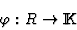
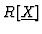
with respect to any ordering in the monomials of (note that in this case Kalkbrener's approach requires the computation of a Gröbner Basis in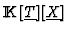
). The question to answer is: when isassume that the gi's are ordered in such a way that there exists oneBut remark that in order to test this condition, we need to compute a Gröbner basis of , but this can be, in the worst case, similar to compute a Gröbner basis of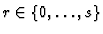
with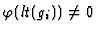
for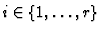
, and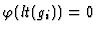
for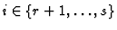
. Then, for every the polynomial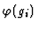
is reducible to 0 modulo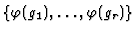
.
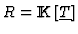
, which implies that it requires the computation of a Gröbner Basis over an integral domain (